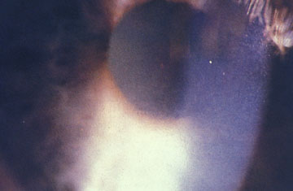
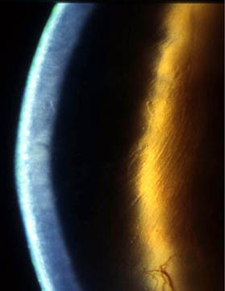
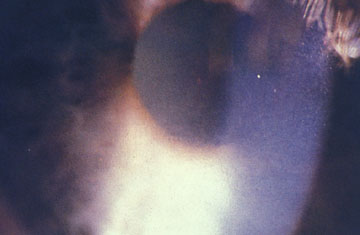
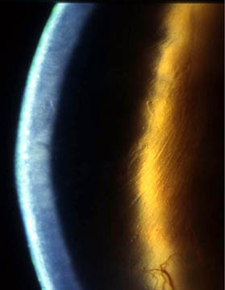

+ Loạng dưỡng Fuch

Ground glass appearance of the guttata

Guttata seen as black areas in specular reflection

Phù giác mạc liên quan đến loạng dưỡng Fuch
Fuch's dystrophy
* Định nghĩa:
+ Loạng dưỡng Fuch

Ground glass appearance of the guttata
Guttata seen as black areas in specular reflection

Phù giác mạc liên quan đến loạng dưỡng Fuch